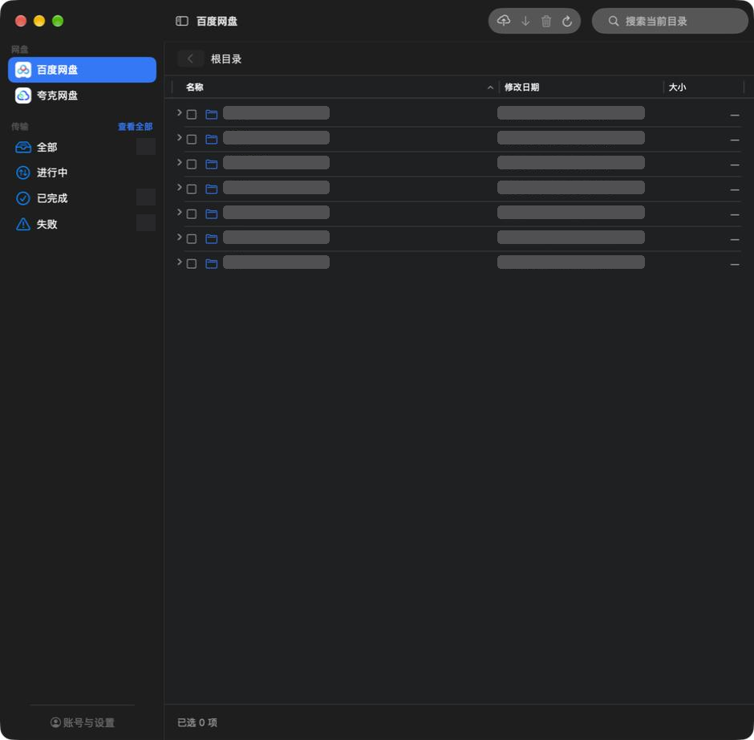
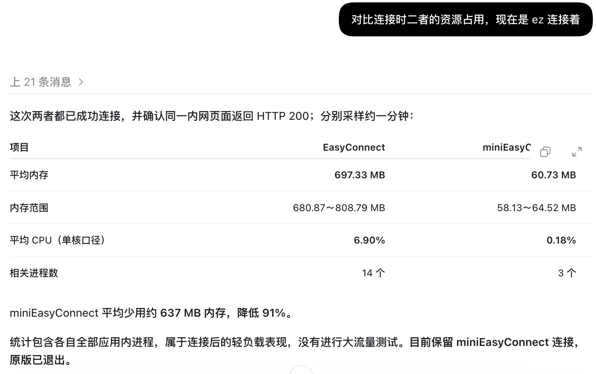
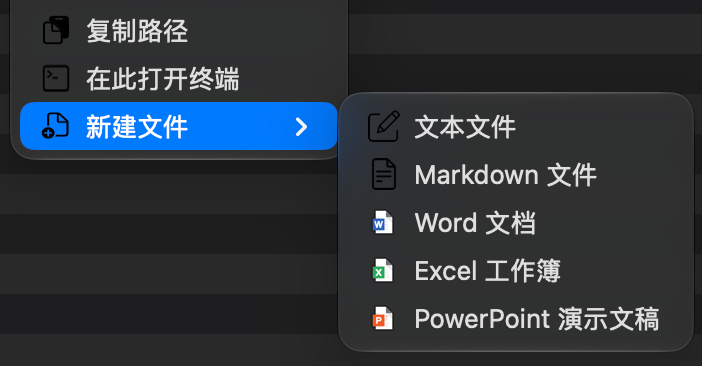
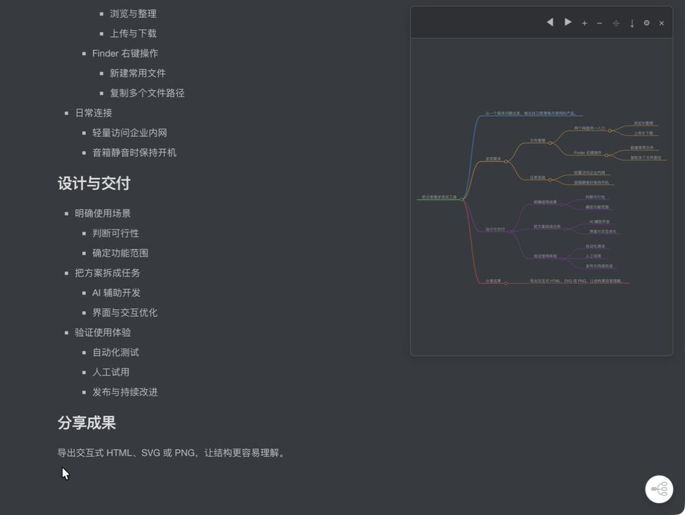
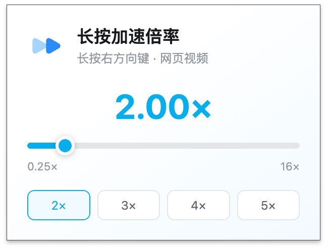

开源工具






音箱静音保活
Windows 10
让音箱静音时，也不关机
网页视频长按倍速
Chrome · Edge
按住右方向键加速，松开恢复原速
自定义 0.25×～16× 倍速，适用于网页视频
识别正在播放的视频，覆盖为插件的交互
支持 B 站、抖音、油管等






让音箱静音时，也不关机
按住右方向键加速，松开恢复原速
自定义 0.25×～16× 倍速，适用于网页视频
识别正在播放的视频，覆盖为插件的交互
支持 B 站、抖音、油管等
